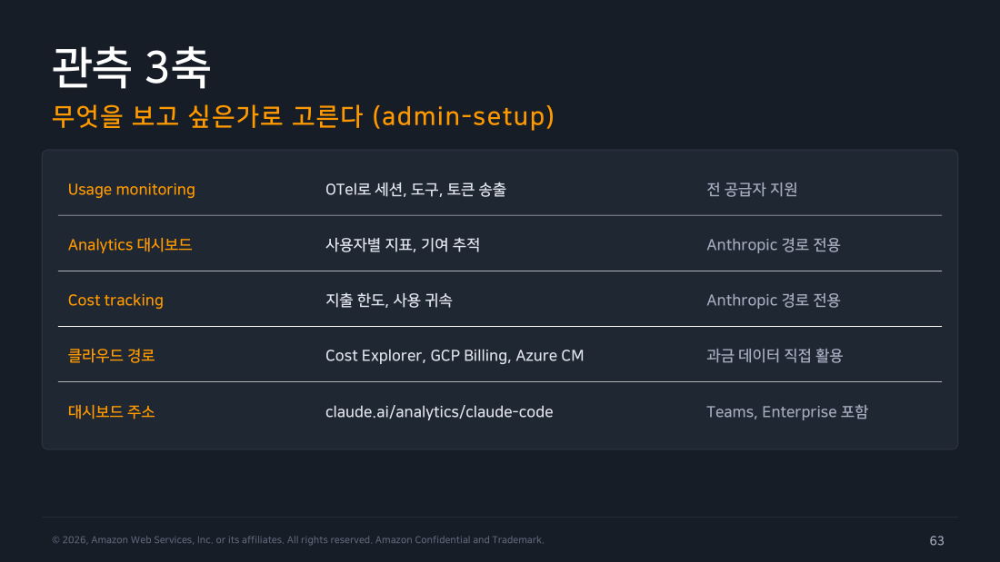
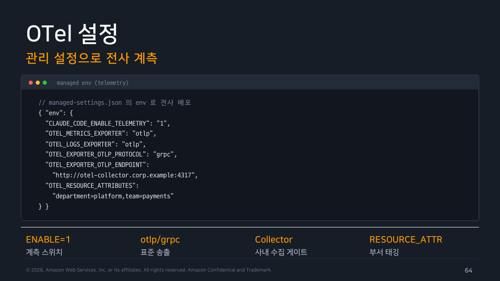
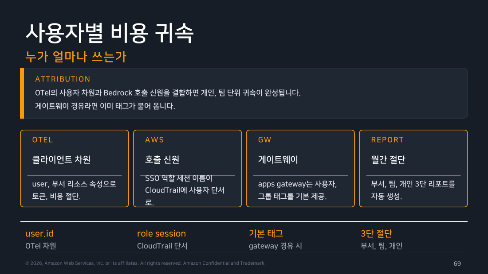
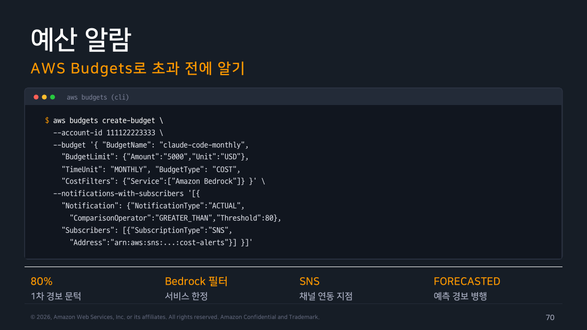

Part 6 — 모니터링과 비용¶
한 줄 요약¶
OTel(OpenTelemetry, 프로그램이 자기 사용량·성능 데이터를 표준 형식으로 내보내게 해 주는 계측 도구)을 관리 설정으로 전사에 깔아 세션·토큰·비용 숫자를 내보냅니다. 그 숫자에 부서 태그와 사용자 신원을 붙여 "누가 얼마나 썼는지"를 가려냅니다. 마지막으로 예산 알람과 이상 감지를 걸어 되먹임 루프를 닫습니다.
왜 알아야 하나¶
도입 3개월 차에 재무팀에서 메일이 옵니다. "지난달 Bedrock 청구가 두 배가 됐는데 누가 쓴 겁니까." Bedrock(Amazon Bedrock, 여러 회사의 AI 모델을 AWS가 대신 호스팅해 주는 서비스. Claude도 여기를 통해 쓸 수 있습니다)을 쓰는 조직에서 흔한 장면입니다. 이때 답할 수 있는 조직과 없는 조직이 갈립니다.
없는 조직은 총액만 압니다. 어느 팀이 얼마를 썼는지 모릅니다. 금액이 늘어난 이유가 쓰는 사람이 늘어서인지, 한 사람이 폭주해서인지도 구분하지 못합니다. 비싼 모델을 더 많이 쓰게 된 건지, 대화가 길어진 건지도 알 수 없습니다.
그러면 대응이 하나뿐입니다. 결국 전체를 조입니다. 한도를 낮추고 모델을 제한합니다. 결과적으로 잘 쓰던 사람까지 같이 불편해집니다.
있는 조직은 "결제팀이 야간 배치를 opus로 돌리고 있었다"까지 짚습니다. 그러면 대응도 좁아집니다. 그 배치 하나의 모델만 바꾸면 됩니다.
이 차이는 도구가 아니라 준비 시점에서 갈립니다. 계측(프로그램이 자기 동작을 숫자로 기록해 내보내게 만드는 것)은 켠 시점부터의 데이터만 남깁니다. 그래서 청구서를 받고 나서 붙이면 지난달을 설명해 주지 못합니다. Part 3에서 관리 설정을 깔 때 텔레메트리(telemetry, 계측한 데이터를 원격 수집처로 보내는 것) 환경변수를 같이 넣어 두는 것과, 사고가 난 뒤 부랴부랴 넣는 것은 데이터의 가치가 다릅니다.
앞 파트에서 만든 권한·정책이 "무엇을 막을 것인가"였다면, 이 파트는 "실제로 무슨 일이 일어나고 있는가" 를 보는 눈을 다는 작업입니다.
그리고 이 눈은 통제만을 위한 것이 아닙니다. Part 5에서 정한 정책이 과했는지 부족했는지도 결국 숫자로만 알 수 있습니다. 거부 이벤트가 특정 규칙에 몰려 있다면 그 규칙이 잘못 잡힌 것입니다. 반대로 채택률이 특정 팀에서만 낮다면 정책 문제가 아니라 온보딩 문제입니다. 숫자가 다음 판의 정책을 결정합니다.
1. 관측 3축 — 무엇을 보고 싶은가로 고른다¶
먼저 용어를 하나 맞추고 가겠습니다. 관측(observability) 은 시스템 안에서 무슨 일이 일어나는지 밖에서 볼 수 있게 숫자와 기록을 남기는 것입니다.
Claude Code의 관측 수단은 하나가 아니라 셋입니다. 흔한 실수는 이 셋을 "옵션 A/B/C"로 보고 하나만 고르려 드는 것입니다. 셋은 서로 다른 질문에 답하도록 만들어졌습니다. 그리고 각각 쓸 수 있는 조건도 다릅니다.
-
Usage monitoring (OpenTelemetry)은 "얼마나 쓰이고 있는가"에 답합니다. 세션 수, 도구 호출, 토큰량(token, 모델이 글을 잘게 쪼개 세는 단위. 과금이 이 개수를 기준으로 매겨집니다)을 OTel 표준 형식으로 우리 수집기(Collector, 여러 곳에서 오는 계측 데이터를 한군데로 받아 정리해 주는 중계 서버)에 보냅니다. 핵심은 모든 공급자에서 동작한다는 점입니다. Anthropic API에 직접 붙든 Bedrock을 거치든 Vertex(구글 클라우드의 AI 모델 서비스)를 거치든 상관없습니다. 서버가 아니라 Claude Code 자신이 자기 행동을 보고하기 때문에 경로를 가리지 않습니다.
-
Analytics 대시보드는 "누가 어떻게 쓰고 있는가"에 답합니다. 사용자별 활성도와 기여 추적을 별도 구축 없이 바로 봅니다. 다만 Anthropic 경로 전용입니다. 이 대시보드는 Anthropic 측 서버가 받은 요청을 집계한 것이기 때문입니다. Bedrock으로 우회하는 트래픽은 애초에 Anthropic 서버를 지나가지 않으므로 잡히지 않습니다.
-
Cost tracking은 "얼마 썼고 얼마까지 쓸 수 있는가"에 답합니다. 지출 한도와 사용 귀속(누가 이 비용을 썼는지 추적해 나누는 것)을 콘솔에서 다룹니다. 이것도 Anthropic 경로 전용입니다.
여기에 네 번째 갈래로 클라우드 경로가 붙습니다. Bedrock·Vertex·Azure를 쓰는 조직은 Cost Explorer(AWS의 비용 조회 화면), GCP Billing, Azure Cost Management의 과금 데이터를 직접 활용합니다. 이건 Claude Code가 제공하는 기능이 아닙니다. 이미 갖고 있는 클라우드 청구 체계를 그대로 쓰는 것입니다. 그래서 오히려 기존 FinOps(클라우드 비용을 관리하고 부서에 배분하는 업무) 프로세스에 얹기가 쉽습니다.
이 구조를 정리하면 선택 기준이 명확해집니다. 무엇을 보고 싶은지가 아니라 어떤 경로로 모델을 호출하는지가 선택지를 먼저 좁힙니다.
flowchart TD
Q{"모델 호출 경로가<br/>무엇인가?"}
Q -->|"Anthropic API / 콘솔"| A["<b>3축 전부 사용 가능</b><br/>OTel + Analytics + Cost tracking<br/>대시보드는 별도 구축 불필요"]
Q -->|"Bedrock / Vertex / Azure"| B["<b>OTel + 클라우드 과금</b><br/>Analytics·Cost tracking은 미적용<br/>Cost Explorer 등으로 대체"]
Q -->|"혼합 조직"| C["<b>OTel을 공통 축으로</b><br/>경로가 달라도 클라이언트 계측은 동일<br/>Analytics는 보조 지표로만"]
A --> R["<b>질문이 선택을 마무리</b><br/>쓰임 → OTel / 사람 → Analytics<br/>지출 → Cost tracking·클라우드 청구"]
B --> R
C --> R
style Q fill:#673ab7,stroke:#4527a0,stroke-width:3px,color:#fff
style A fill:#e8f5e9,stroke:#388e3c,color:#000
style B fill:#e3f2fd,stroke:#1976d2,color:#000
style C fill:#fff3e0,stroke:#f57c00,color:#000
style R fill:#ede7f6,stroke:#673ab7,color:#000혼합 조직이 특히 중요합니다. 실무에서는 "본사는 Anthropic 콘솔, 규제 대상 계열사는 Bedrock" 같은 구성이 흔합니다. 이때 Analytics 대시보드만 보고 채택률을 판단하면 위험합니다. Bedrock 쪽 사용자가 통째로 빠진 숫자를 경영진에게 보고하게 되기 때문입니다.
그래서 혼합 조직일수록 OTel을 조직 공통의 진실 소스(여러 데이터가 어긋날 때 기준으로 삼는 하나의 출처)로 삼는 편이 안전합니다. Analytics는 "Anthropic 경로에 한해 더 자세히 보이는 보조 화면"으로 격을 낮춰 다룹니다.

▲ 교재 슬라이드 63 — 관측 3축
Analytics 대시보드 주소는 claude.ai/analytics/claude-code이고 Teams·Enterprise 플랜에 포함됩니다.
현장 메모
관측 수단을 고를 때 먼저 정해야 할 것은 "이 숫자를 누가 볼 것인가"입니다. 플랫폼팀이 볼 숫자(세션·도구·거부)는 OTel로 Grafana(수집한 지표를 그래프로 보여 주는 대시보드 도구)에 넣으면 다른 인프라 지표와 나란히 볼 수 있습니다. 반대로 재무팀이 볼 숫자(월 청구액·부서 배분)는 이미 매달 열어보는 Cost Explorer에 있어야 합니다. 아무리 잘 만든 대시보드도 그 사람이 평소 안 여는 화면에 있으면 안 보는 것과 같기 때문입니다.
2. OTel 설정 — 관리 설정으로 전사 계측¶
계측의 가치는 커버리지(전체 사용자 중 계측이 켜진 비율)에서 나옵니다. 절반만 켜진 계측은 "우리 조직 사용량"을 말해주지 못합니다. 심지어 위험하기까지 합니다. 계측이 꺼진 사용자가 폭주해도 아무 신호가 안 뜨는데, 대시보드는 평온해 보이기 때문입니다.
그래서 텔레메트리는 개인이 켜는 옵션이 아닙니다. Part 5에서 다룬 관리 설정(managed settings)의 env 블록으로 전사에 내려보내는 항목이어야 합니다. 관리 설정은 사용자가 덮어쓸 수 없는 최상위 계층입니다. 여기에 넣으면 "켜져 있는 상태"가 조직의 기본값이 됩니다.
설정에서 실제로 조율하는 것은 네 가지입니다.
-
계측 스위치:
CLAUDE_CODE_ENABLE_TELEMETRY=1. 이것 하나가 전체 송출의 온오프입니다. 나머지 설정이 아무리 정확해도 이게 없으면 아무 일도 일어나지 않습니다. -
표준 송출 형식은 메트릭(metric, 숫자로 집계되는 지표)과 로그(log, 사건 하나하나의 기록)를 각각 어디로 어떤 방식으로 보낼지 정합니다.
otlp익스포터(exporter, 데이터를 밖으로 내보내는 부품)와grpc프로토콜 조합이 사내 수집기로 보내는 표준 구성입니다. 여기서 중요한 건 이게 Claude Code 전용 규격이 아니라 OpenTelemetry 표준이라는 점입니다. 이미 OTel 수집기를 운영 중이라면 새 파이프라인을 만들 필요가 없습니다. 엔드포인트(endpoint, 데이터를 받을 서버 주소)만 알려주면 됩니다. -
수집 게이트: 엔드포인트는 SaaS 관측 도구를 직접 가리키지 않는 편이 낫습니다. 대신 사내 OTel Collector를 경유시킵니다. 수집기를 한 번 거치면 속성 필터링·민감정보 마스킹·여러 곳으로 분기 송출을 중앙에서 처리할 수 있습니다. 나중에 관측 백엔드(수집한 데이터를 실제로 저장하고 조회하는 시스템)를 바꿔도 클라이언트(여기서는 각 사용자 PC에서 도는 Claude Code) 설정은 그대로 둘 수 있다는 것도 장점입니다.
-
부서 태깅은
OTEL_RESOURCE_ATTRIBUTES에department,team같은 조직 정보를 실어 보냅니다. 이 한 줄이 나중에 §7의 비용 귀속을 가능하게 만드는 씨앗입니다. 처음부터 넣지 않으면 소급(과거 데이터에 뒤늦게 적용)이 불가능한 유일한 항목이기도 합니다. 지난달 데이터에 부서 태그를 나중에 붙일 방법은 없습니다.

▲ 교재 슬라이드 64 — OTel 설정
관리 설정 파일로 쓰면 이런 형태가 됩니다.
{
"env": {
"CLAUDE_CODE_ENABLE_TELEMETRY": "1",
"OTEL_METRICS_EXPORTER": "otlp",
"OTEL_LOGS_EXPORTER": "otlp",
"OTEL_EXPORTER_OTLP_PROTOCOL": "grpc",
"OTEL_EXPORTER_OTLP_ENDPOINT": "http://otel-collector.corp.example:4317",
"OTEL_RESOURCE_ATTRIBUTES": "department=platform,team=payments"
}
}
한 가지 운영상의 주의점이 있습니다. OTEL_RESOURCE_ATTRIBUTES의 부서·팀 값은 팀마다 달라야 합니다. 그런데 관리 설정 파일은 보통 조직 전체에 똑같이 배포됩니다.
그래서 두 가지 방법 중 하나를 씁니다. MDM(Mobile Device Management, 회사가 직원 노트북·기기에 설정 파일을 일괄 배포하고 관리하는 시스템)으로 파일을 뿌릴 때 부서별로 다른 값을 치환해 배포하거나, 공통 파일에는 스위치와 엔드포인트만 넣고 부서 태그는 배포 도구가 따로 주입하게 나누는 것입니다. 이 분리를 미리 설계하지 않으면 나중에 전 조직이 department=unknown으로 찍힌 데이터를 보게 됩니다.
3. 메트릭 카탈로그 — 무엇이 계측되는가¶
켜고 나면 무엇이 나오는지가 궁금해집니다. 계측 항목은 성격에 따라 여섯 갈래로 묶입니다. 각 갈래가 답하는 질문이 다릅니다.
-
세션 지표로 채택률을 봅니다. 세션(session, Claude Code를 한 번 켜서 끌 때까지의 대화 단위) 수와 활성 시간이 여기 속합니다. 도입 초기에 경영진이 가장 먼저 묻는 "정말 쓰고 있나"에 답하는 숫자입니다. 링(ring, pilot → early adopter → 전사 순으로 대상을 넓혀 가며 단계적으로 배포하는 방식) 확산을 다음 단계로 넘길지 판단하는 근거이기도 합니다. 라이선스는 다 샀는데 활성 사용자가 30%라면 문제는 도구가 아니라 온보딩입니다.
-
토큰 지표: 비용의 원천 데이터입니다. 입력·출력뿐 아니라 캐시 읽기와 캐시 생성이 따로 잡힌다는 점이 중요합니다. 프롬프트 캐시(반복해서 보내는 같은 내용을 서버에 저장해 두고 재사용하는 기능)는 만들 때 비싸고 읽을 때 쌉니다. 이 둘이 분리돼 있어야 "캐시가 실제로 재사용되고 있는가"를 판단할 수 있습니다. 그 판단이 §9의 최적화로 이어집니다. 캐시 생성만 계속 늘고 읽기가 안 붙는다면 캐시 설계가 잘못된 것입니다.
-
비용 지표는 모델 단가를 반영해 계산한 추정 비용 카운터입니다. "추정"이라는 말에 무게가 있습니다. 이건 Claude Code가 자기가 아는 단가로 계산한 값이라 청구서의 실제 금액과는 다를 수 있습니다. 할인 계약, 미리 사 둔 처리량, 리전(region, 클라우드 데이터센터가 위치한 지역)별 단가 차이가 반영되지 않기 때문입니다. 그래서 비용 지표는 "실시간으로 추세를 보는 용도"로 씁니다. 정산의 기준은 §6의 클라우드 청구 데이터에 둡니다.
-
도구 지표: 정책 마찰 신호입니다. Part 5에서 만든 권한 규칙이 실제로 어떻게 작동하는지 알려줍니다. 특정 도구의 거부가 유독 높다면 규칙이 과한 것이거나, 사용자가 우회로를 찾고 있다는 뜻입니다. 둘 다 조치가 필요한 상황입니다.
여기서 걸리기 쉬운 함정이 하나 있습니다. 도구별 승인/거부 판정(claude_code.tool_decision)과 결과(claude_code.tool_result)는 엄밀히는 메트릭이 아니라 이벤트입니다. 그래서 OTEL_METRICS_EXPORTER만 켜서는 안 잡힙니다. OTEL_LOGS_EXPORTER를 함께 켜야 나옵니다.
메트릭 쪽에서 도구 관련으로 실제로 잡히는 건 code_edit_tool.decision(Edit·Write류 도구의 승인/거부를 집계한 값) 하나입니다. 개별 호출 하나하나의 상세(어떤 도구를, 어떤 인자로, 왜 거부했는지)는 이벤트 쪽에 있습니다. 정리하면 집계 추세는 메트릭으로, 개별 사건의 상세는 로그로 나눠 봐야 한다는 것이고, 이게 실무에서 자주 놓치는 부분입니다.
나머지 두 갈래는 이렇습니다.
-
코드 변화 지표: 기여 추적입니다. 실제 메트릭 이름은
claude_code.lines_of_code.count(추가/삭제 구분),claude_code.commit.count,claude_code.pull_request.count입니다. 성과 보고에 쓰이는 숫자지만 개인 평가에 쓰는 순간 지표가 오염됩니다. 라인 수로 사람을 평가하면 사람은 라인 수를 늘립니다. 팀 단위 추세로만 보는 게 안전합니다. -
이벤트 로그는 메트릭이 아니라 개별 사건의 기록입니다.
OTEL_LOGS_EXPORTER라는 별도 채널로 나갑니다. 프롬프트 제출, 앞에서 본 도구 승인/거부(claude_code.tool_decision) 같은 행위가 로그로 남고, 이게 다음 절의 SIEM 연계 소스가 됩니다. 메트릭은 "얼마나"를 집계하지만 로그는 "무엇을"을 남깁니다. 그래서 보안 관점의 조사에는 로그가 필요합니다. §2에서OTEL_METRICS_EXPORTER만 켜고 "왜 도구 호출 상세가 안 보이지"라고 헤맨다면, 십중팔구OTEL_LOGS_EXPORTER를 빼먹은 것입니다.
여섯 갈래를 "누가 이 숫자로 무엇을 결정하는가"로 다시 묶으면 대시보드를 어떻게 나눌지가 정해집니다.
flowchart LR
S["<b>세션</b><br/>세션 수 · 활성 시간"] --> Q1["<b>채택 판단</b><br/>링 확산을 넘길까"]
T["<b>토큰</b><br/>입출력 · 캐시 읽기/생성"] --> Q2["<b>비용 판단</b><br/>어디를 줄일까"]
C["<b>비용</b><br/>추정 비용 카운터"] --> Q2
D["<b>도구</b><br/>호출 수 · 승인/거부"] --> Q3["<b>정책 판단</b><br/>완화할까 강화할까"]
G["<b>코드 변화</b><br/>라인 · 커밋 · PR"] --> Q4["<b>성과 보고</b><br/>값어치를 하는가"]
E["<b>이벤트 로그</b><br/>행위 단위 기록"] --> Q5["<b>보안 조사</b><br/>무슨 일이 있었나"]
style S fill:#e3f2fd,stroke:#1976d2,color:#000
style T fill:#e3f2fd,stroke:#1976d2,color:#000
style C fill:#e3f2fd,stroke:#1976d2,color:#000
style D fill:#fff3e0,stroke:#f57c00,color:#000
style G fill:#e8f5e9,stroke:#388e3c,color:#000
style E fill:#f3e5f5,stroke:#8e24aa,color:#000
style Q1 fill:#ede7f6,stroke:#673ab7,color:#000
style Q2 fill:#ede7f6,stroke:#673ab7,color:#000
style Q3 fill:#ede7f6,stroke:#673ab7,color:#000
style Q4 fill:#ede7f6,stroke:#673ab7,color:#000
style Q5 fill:#ede7f6,stroke:#673ab7,color:#000토큰과 비용이 같은 판단으로 모이는 게 눈에 띕니다. 비용 카운터는 토큰에서 계산해 낸 값이라 둘을 따로 보는 의미가 크지 않습니다. 오히려 토큰의 내역(캐시 비중, 입력 대 출력 비율)이 비용을 줄일 실마리를 줍니다. 총액만 보면 "많이 썼다"로 끝납니다. 내역을 보면 "입력이 비정상적으로 크다 → 대화에 불필요한 내용이 계속 쌓이고 있다"까지 짚힙니다.
현장 메모
여섯 갈래 중 이벤트 로그만 성격이 다릅니다. 메트릭은 숫자 집계라 보관 비용이 거의 안 듭니다. 반면 이벤트 로그는 사건 하나당 레코드 하나라, 사용자가 늘면 저장 비용도 그만큼 같이 늡니다.
게다가 프롬프트 관련 로그에는 내용에 따라 민감정보가 실릴 수 있습니다. 그래서 보관 기간과 접근 통제를 메트릭과 다르게 잡아야 합니다. Collector에서 두 갈래를 분리해 메트릭은 장기 보관, 이벤트 로그는 짧은 보관 + 제한된 접근으로 나누는 구성이 여기에 맞습니다. 이 얘기는 Part 7의 데이터 취급 원칙과 이어집니다.
4. SIEM 연계 — 보안 관점의 활용¶
SIEM(Security Information and Event Management)은 회사 곳곳의 로그를 한군데로 모아 보안 이상 징후를 탐지하는 시스템입니다. Splunk나 OpenSearch가 대표적입니다.
같은 데이터를 비용이 아니라 보안 관점으로 읽으면 이 SIEM 연계가 됩니다. 새 파이프라인을 까는 일이 아닙니다. 이미 흐르고 있는 데이터를 한 갈래 더 갈라 보내는 일입니다.
flowchart LR
C["<b>Collector</b><br/>사내 OTel 수집기"] -->|"이중 송출"| M["<b>관측 백엔드</b><br/>Grafana 등<br/>비용·채택 대시보드"]
C -->|"분기"| S["<b>SIEM</b><br/>Splunk / OpenSearch<br/>보안 관점 적재"]
H["<b>감사 훅 로그</b><br/>Part 5에서 구성"] -->|"사용자 키로 조인"| S
S --> R["<b>탐지 규칙</b><br/>거부 급증 · 심야 대량 토큰<br/>민감 경로 접근"]
R --> A["<b>대응 연결</b><br/>티켓 자동 발부<br/>긴급 정책 배포"]
style C fill:#e3f2fd,stroke:#1976d2,color:#000
style M fill:#e8f5e9,stroke:#388e3c,color:#000
style S fill:#fff3e0,stroke:#f57c00,color:#000
style H fill:#f3e5f5,stroke:#8e24aa,color:#000
style R fill:#ede7f6,stroke:#673ab7,color:#000
style A fill:#ffebee,stroke:#c62828,color:#000-
경로: §2에서 사내 Collector를 경유시킨 이유가 여기서 회수됩니다. 수집기가 중간에 있으면 같은 데이터 흐름을 관측 백엔드와 SIEM 양쪽으로 동시에 보낼 수 있습니다. 만약 Claude Code가 SaaS 주소를 직접 가리키고 있었다면, SIEM을 붙이려고 전 사용자 설정을 다시 배포해야 했을 것입니다.
-
결합에서 실질적인 가치가 나옵니다. OTel 메트릭만으로는 "이 사용자의 토큰이 급증했다"까지만 알 수 있습니다. Part 5에서 구성한 감사 훅 로그와 사용자 키로 조인(join, 같은 사용자 식별자를 기준으로 두 데이터를 붙이는 것)하면 "어떤 명령을 실행하다 그렇게 됐는지" 가 붙습니다. 조사에서 결정적인 건 항상 후자입니다.
-
탐지 규칙은 세 가지를 출발선으로 잡습니다. 거부 이벤트의 단기 급증, 심야 시간대의 대량 토큰 소비, 민감 경로에 대한 접근 시도입니다. 셋 다 "그 자체로 사고"라기보다 "들여다볼 만한 신호" 입니다. 처음부터 정교한 규칙을 만들려 하지 마세요. 이 셋을 먼저 켜고 오탐(false positive, 실제로는 문제가 아닌데 알람이 울리는 것)을 보면서 조이는 편이 현실적입니다.
-
대응 연결: 여기까지 가야 루프가 닫힙니다. 탐지가 티켓 자동 발부로 이어지게 하고, 심각한 경우
deniedMcpServers(사용을 금지할 MCP 서버 목록. MCP는 Model Context Protocol의 약자로, Claude Code에 외부 도구·데이터를 연결해 주는 표준입니다) 같은 긴급 정책을 관리 설정으로 즉시 배포하는 경로를 미리 만들어 둡니다. 탐지만 있고 대응 경로가 없으면 알람은 결국 무시됩니다.
5. Analytics 대시보드 — 무구축으로 얻는 사람 단위 해상도¶
Anthropic 경로를 쓰는 조직은 claude.ai/analytics/claude-code에서 별도 구축 없이 대시보드를 씁니다. OTel처럼 수집기를 세우고 대시보드를 직접 짜는 작업이 필요 없다는 것이 최대 장점입니다.
이 URL은 공식문서에 나오는 주소이고, Team·Enterprise 플랜의 Admin·Owner가 볼 수 있습니다. API(Console) 고객이라면 같은 성격의 대시보드가 platform.claude.com/claude-code라는 별도 주소에 있습니다. 즉 좌석제(사람 수만큼 자리를 사는 방식)냐 API 종량제(쓴 만큼 내는 방식)냐에 따라 대시보드 위치 자체가 갈립니다.
여기서 얻는 것은 사람 단위 해상도입니다. 활성 사용자, 세션, 제안 수용률 같은 개인 단위 지표가 나옵니다. 여기에 커밋·PR 기여 같은 성과 관점 지표도 함께 나옵니다. 도입 성과를 경영진에게 보고할 때 기본 화면으로 삼기 좋은 이유가 이것입니다. 별도 가공 없이 "몇 명이 실제로 쓰고 있고 무엇이 나왔는가"를 바로 보여줍니다.
한계는 앞에서 말한 그대로입니다. Anthropic 경로 전용이라 Bedrock을 같이 쓰는 조직은 이 대시보드만으로 전체를 볼 수 없습니다. 그래서 혼합 조직에서 Analytics와 OTel은 경쟁 관계가 아니라 보완 관계입니다. 사람 단위 해상도는 Analytics에서 얻고, 조직 전체 커버리지는 OTel로 채웁니다.
현장 메모
수용률(Claude Code가 제안한 내용을 사용자가 실제로 받아들인 비율)은 Analytics에서만 편하게 보이는 지표입니다. 개인 평가 지표로 쓰기엔 위험하지만 온보딩 진단용으로는 아주 유용합니다.
수용률이 낮게 나온다면 도구를 안 쓴다기보다 쓰는 방식이 어긋났을 가능성이 큽니다. 맥락을 안 주고 물어보거나, CLAUDE.md 없이 큰 저장소에서 시작하는 식입니다. 이 숫자를 팀별로 보면 어느 팀에 교육을 다시 돌려야 하는지가 보입니다.
6. 클라우드 비용 가시화 — Bedrock 경로의 과금 데이터¶
Bedrock을 쓰면 좋은 점 하나가 여기서 나옵니다. 사용료가 AWS 청구 체계에 그대로 잡힙니다. 별도의 비용 관리 화면을 새로 배울 필요도, 두 개의 청구서를 대조할 필요도 없습니다. 이미 쓰던 Cost Explorer에서 다른 AWS 서비스와 나란히 봅니다.
비용을 쪼개 보는 방법은 네 가지 층으로 정리됩니다.
-
서비스 필터: Cost Explorer에서 Amazon Bedrock 서비스로 걸러내고, 모델별로 한 번 더 쪼갭니다. 이것만으로 "이번 달 총액과 모델 믹스(어떤 모델을 각각 얼마나 썼는지의 비율)"가 나옵니다. §9의 모델 배분 최적화가 실제로 효과가 있었는지 확인하는 화면이 바로 여기입니다.
-
태그 전략의 핵심은 애플리케이션 인퍼런스 프로파일에 비용 할당 태그를 붙이는 것입니다. 인퍼런스 프로파일(inference profile)은 Bedrock에서 "어떤 모델을 어떤 조건으로 호출할지"를 미리 정의해 이름표를 붙여 둔 설정 묶음입니다. 비용 할당 태그는 리소스에
CostCenter=payments같은 꼬리표를 달아 청구서에서 그 기준으로 금액을 나눠 볼 수 있게 하는 AWS 기능입니다.
Bedrock 호출을 기본 모델 ID로 직접 하면 태그를 붙일 대상이 없어 부서별로 나눌 수가 없습니다. 인퍼런스 프로파일이 태그를 붙일 단위가 되어 주기 때문에, 비용을 부서별로 보려면 호출 방식 자체를 프로파일 경유로 설계해야 합니다.
-
부서 배분은 태그로 나눌지 AWS 계정 자체를 분리할지의 선택입니다. 태그는 유연하지만 모두가 규칙을 지켜야 합니다. 계정 분리는 확실하지만 관리가 무겁습니다. 어느 쪽이든 차지백(chargeback, 부서가 쓴 클라우드 비용을 그 부서에 청구해 되돌려 받는 것) 리포트를 만들 수 있는 형태로 귀결되어야 합니다.
-
일 단위 추적: 월 단위로만 보면 사고를 월말에 알게 됩니다. 일별 비용 그래프를 켜 두면 추세와 급변을 훨씬 빨리 잡습니다. §10의 이상 감지와 §8의 예산 알람이 이 해상도 위에서 동작합니다.
현장 메모 — 인퍼런스 프로파일 태깅은 나중에 못 붙입니다
Bedrock을 처음 열 때는 대개 일정이 급합니다. 그래서 베이스 모델 ID나 리전 접두 프로파일(us.anthropic.…)로 바로 호출하게 열어 주기 쉽습니다. 그러면 몇 달 뒤 재무팀이 부서별 배분을 요구할 때 Cost Explorer에 "Amazon Bedrock 총액" 한 줄만 남아 있는 상태가 됩니다. 지난 청구 데이터에 태그를 나중에 붙일 방법은 없습니다.
그래서 Bedrock을 여는 시점에 순서를 이렇게 잡아야 합니다. 먼저 부서(또는 비용센터, 회계상 비용을 모아 집계하는 조직 단위)별로 애플리케이션 인퍼런스 프로파일을 만듭니다. 거기에 CostCenter·Team·Env 태그를 붙입니다. 마지막으로 그 프로파일의 ARN(Amazon Resource Name, AWS 리소스마다 부여되는 고유 주소)만 호출할 수 있도록 IAM(AWS의 권한 관리 서비스)으로 좁힙니다. 이렇게 잡으면 "태그를 붙이지 않고 쓰는 경로"가 애초에 존재하지 않게 됩니다.
마지막으로 잊기 쉬운 것이 하나 더 있습니다. 태그 키는 반드시 비용 할당 태그로 활성화해야 Cost Explorer에서 조회 기준으로 올라옵니다. 태그는 붙였는데 화면에 안 나온다면 대개 이 활성화를 안 한 것입니다. 그리고 활성화한 시점 이후의 데이터부터 적용된다는 점도 같이 기억해야 합니다.
7. 사용자별 비용 귀속 — 누가 얼마나 쓰는가¶
비용 귀속은 "이 비용을 누가, 어느 팀이 썼는지" 추적해서 나누는 일을 말합니다.
부서까지는 앞 절의 태그로 갈라집니다. 그런데 "결제팀 안에서 누가"까지 가려면 한 겹이 더 필요합니다. 클라우드 청구 데이터는 기본적으로 리소스 단위이지 사람 단위가 아니기 때문입니다.
귀속은 Claude Code 쪽 단서와 클라우드 쪽 단서를 결합해서 완성됩니다.
-
클라이언트 차원 (OTel)은 메트릭에 붙어 오는 사용자 식별자와 §2에서 넣은 부서 정보로 토큰·비용을 사람 단위까지 쪼갭니다. 이건 호출 경로와 무관하게 동작하므로 혼합 조직에서도 일관됩니다.
-
호출 신원 (AWS): SSO(Single Sign-On, 사내 계정 하나로 여러 시스템에 로그인하는 방식)를 통한 호출이라면 역할 세션 이름이 CloudTrail(AWS에서 누가 어떤 API를 호출했는지 남기는 감사 로그 서비스)에 남습니다. 이게 "이 Bedrock 호출을 실제로 누가 했는가"의 단서가 됩니다.
여기에는 전제가 하나 붙습니다. 여러 명이 공용 역할 하나를 공유해 쓰면 이 단서가 사라집니다. SSO를 통해 사용자마다 별도 세션이 만들어지는 구성이어야 합니다.
-
게이트웨이 경유는 LLM 게이트웨이(사내 요청을 한 곳에서 받아 모델 서비스로 중계해 주는 서버)를 두는 경우입니다. 이런 조직이라면 사용자·그룹 태그가 이미 붙어서 옵니다. 이 경우 귀속 작업의 상당 부분이 게이트웨이 단에서 이미 끝나 있는 셈입니다. 남은 일은 그 태그를 청구·관측 데이터와 이어 붙이는 것뿐입니다.
-
월간 리포트의 최종 산출물은 부서 → 팀 → 개인의 3단 리포트입니다. 부서 층은 재무 배분에, 팀 층은 운영 회의에, 개인 층은 이상 감지에 쓰입니다. 같은 데이터를 세 가지 해상도로 보는 것이지, 세 개의 파이프라인을 따로 만드는 게 아닙니다.

▲ 교재 슬라이드 69 — 사용자별 비용 귀속
현장 메모
개인 단위 귀속은 기술적으로는 어렵지 않은데 조직적으로는 민감합니다. 개인별 비용표가 돌기 시작하면 사람들은 비용을 줄이려 도구를 덜 씁니다. 그건 도입 목적과 정반대입니다.
그래서 개인 층 데이터는 평상시에는 열지 않고, 이상 신호가 뜬 계정을 조사할 때만 여는 용도로 격을 정해 두는 편이 낫습니다. 정기 리포트에는 부서·팀 층까지만 싣고, 개인 층은 접근 권한을 따로 좁히는 식입니다.
이 원칙은 데이터 파이프라인을 만들 때 같이 문서로 남겨 두는 게 좋습니다. 나중에 "왜 개인별 순위표를 안 만드냐"는 요구가 왔을 때 근거가 됩니다. 그리고 개인을 식별할 수 있는 정보가 어디까지 어떻게 남는지는 Part 7의 데이터 취급·보관 정책과 반드시 같이 검토해야 합니다.
8. 예산 알람 — 초과 전에 알기¶
대시보드는 누군가 열어봐야 작동합니다. 그래서 비용 관리의 실질적인 방어선은 대시보드가 아니라 알람입니다. 예산 알람은 "이번 달 얼마까지 쓸 것"이라고 미리 정해 두고, 그 금액에 가까워지면 자동으로 알려 주는 장치입니다.
AWS에서는 AWS Budgets라는 서비스로 만듭니다. Bedrock 서비스에 한정한 월 예산을 걸고, 임계치를 넘으면 SNS(Simple Notification Service, AWS의 알림 발송 서비스)로 통보받는 구성이 기본형입니다.
설계에서 정할 것은 네 가지입니다.
-
1차 경보 문턱은 100%가 아니라 80% 지점에 겁니다. 100%에서 울리는 알람은 이미 늦은 알람이라 "알림"이 아니라 "부고"입니다. 80%면 아직 조정할 시간이 남습니다.
-
서비스 한정: 예산 필터를 Amazon Bedrock으로 좁힙니다. 계정 전체 예산에 섞어 두면 다른 서비스의 변동에 묻혀 Claude Code 사용량 변화가 안 보입니다.
-
채널 연동 지점에서는 알림 수신자를 이메일이 아니라 SNS 토픽으로 잡는 게 중요합니다. SNS를 한 번 거치면 같은 알림 하나를 이메일·Slack·Lambda·티켓 시스템으로 동시에 퍼뜨릴 수 있습니다. 수신자가 바뀌어도 예산 정의는 건드릴 필요가 없다는 것도 장점입니다.
-
예측 경보 병행도 필요합니다. 실제(ACTUAL) 경보만 걸면 "이미 쓴 금액"에만 반응합니다. 예측(FORECASTED) 경보를 같이 걸면 "이 추세면 월말에 초과한다" 를 미리 알려줍니다. 월 초에 사용량이 급증한 경우 실제 경보는 한참 뒤에 울리지만 예측 경보는 며칠 안에 울립니다.

▲ 교재 슬라이드 70 — 예산 알람
CLI로 만들면 이런 형태입니다.
aws budgets create-budget \
--account-id 111122223333 \
--budget '{ "BudgetName": "claude-code-monthly",
"BudgetLimit": {"Amount":"5000","Unit":"USD"},
"TimeUnit": "MONTHLY", "BudgetType": "COST",
"CostFilters": {"Service":["Amazon Bedrock"]} }' \
--notifications-with-subscribers '[{
"Notification": {"NotificationType":"ACTUAL",
"ComparisonOperator":"GREATER_THAN","Threshold":80},
"Subscribers": [{"SubscriptionType":"SNS",
"Address":"arn:aws:sns:...:cost-alerts"}] }]'
같은 예산에 NotificationType을 FORECASTED로 바꾼 알림을 하나 더 추가하면 실제·예측 두 축의 경보가 동시에 걸립니다.
현장 메모
예산 알람은 차단이 아니라 통보라는 점을 조직에 명확히 해 두는 게 좋습니다. Budgets가 울려도 호출은 계속됩니다.
실제로 막고 싶다면 다른 수단이 필요합니다. Anthropic 경로의 지출 한도를 쓰거나, 게이트웨이 단에서 레이트 리밋(rate limit, 일정 시간 안에 허용하는 호출 횟수 상한)을 걸거나, IAM 권한이나 서비스 쿼터(AWS가 계정별로 허용하는 사용량 상한)로 조여야 합니다.
"알람 걸어놨으니 안전하다"고 생각하면 알람이 울린 채로 주말이 통째로 지나갈 수 있습니다. 그래서 80% 알람은 팀 채널로, 100% 초과 알람은 온콜(on-call, 장애 발생 시 즉시 호출되는 당번) 호출로 격을 나눠 두는 편이 안전합니다.
9. 비용 최적화 — 품질을 지키며 내리는 여섯 손잡이¶
비용을 줄이는 방법 중 제일 쉬운 건 "덜 쓰게 하는 것"입니다. 그런데 그건 도입 목적을 훼손합니다. 품질과 채택률을 지키면서 내릴 수 있는 손잡이가 여섯 개 있고, 각각 성격이 다릅니다.
-
모델 배분이 효과가 가장 큽니다. 탐색·수집처럼 단순한 찾기에 가까운 작업은 haiku로 돌립니다. 실제 구현의 본대는 sonnet으로 하고, opus는 정말 어려운 판단에만 골라 씁니다. 2주차에서 다룬 서브에이전트
model프론트매터가 이걸 구조적으로 강제하는 수단이었습니다. 모델 단가 차이가 몇 배 단위이므로, 이 손잡이 하나가 나머지 다섯을 합친 것보다 클 때가 많습니다. -
캐시 활용은 반복 작업에서 효과가 납니다. 프롬프트 캐시가 재사용되면 같은 내용을 매번 비싼 값에 다시 밀어 넣지 않아도 됩니다. §3에서 캐시 읽기와 생성이 따로 계측된다고 한 이유가 여기 있습니다. 실제로 재사용되고 있는지를 숫자로 확인하면서 관리해야 합니다. 서브태스크로 갈라진 작업들이 캐시를 공유하게 만드는 구성도 여기 속합니다.
-
컨텍스트 위생은 습관의 문제입니다. 컨텍스트(context)는 모델에게 매번 함께 보내는 이전 대화 내용을 말합니다. 작업이 끝났는데
/clear없이 다음 작업을 이어가면, 전혀 상관없는 이전 대화가 매 요청마다 입력 토큰으로 따라붙습니다. 자동 압축(compact) 임계값을 조정하는 것도 같은 축입니다. 개인 습관이라 강제하기 어렵지만, 온보딩 교육에서 이 하나만 제대로 알려줘도 눈에 띄는 차이가 납니다. -
서브에이전트 격리는 조금 다른 각도입니다. 로그 전수 조사처럼 출력이 방대한 작업을 메인 대화에서 돌리면, 그 방대한 출력이 이후 모든 턴의 입력에 계속 실립니다. 이걸 서브에이전트로 떼어 내면 메인은 요약본만 받습니다. 비용 절감이 목적이 아니라 설계상 자연스러운 선택인데 비용까지 따라오는 경우입니다.
-
배치 시간대: 사람이 지켜보지 않는 작업에 해당합니다. CI(코드 변경마다 자동으로 빌드·테스트를 돌리는 파이프라인)나 예약 작업처럼 사람이 결과를 기다리지 않는 작업을 야간으로 미룹니다. 그러면 피크 시간대에 처리량을 두고 다투는 상황을 피할 수 있습니다. 처리량을 미리 사 둔 조직이라면 이 손잡이의 가치가 특히 큽니다.
-
한도 계층은 마지막 안전장치입니다. 그룹 기본 한도를 깔고 개인 예외를 얹는 구조로 지출 상한을 만듭니다. Part 5의 정책 계층 설계와 같은 사고방식입니다. 기본은 보수적으로, 예외는 명시적으로.
여섯 개 중 앞의 세 개는 사용 방식을 바꾸는 것입니다. 뒤의 세 개는 구조와 정책으로 강제하는 것입니다. 교육으로 되는 것과 설정으로 해야 하는 것을 구분해서 접근하는 편이 실행이 쉽습니다.
10. 이상 사용 감지 — 정상 범위를 벗어난 신호¶
최적화가 평상시의 일이라면 이상 감지는 사고 대응의 일입니다. 어디부터 봐야 할지 막막할 때 출발선으로 잡을 신호가 넷 있습니다.
-
토큰 급증은 개인의 하루 사용량이 자기 이동평균(최근 며칠치의 평균을 계속 갱신해 가며 구한 기준값)의 3배를 넘는 경우입니다. 절대적인 양이 아니라 본인 기준선 대비라는 점이 핵심입니다. 원래 많이 쓰는 사람과 갑자기 많이 쓰게 된 사람은 다른 얘기입니다.
-
심야 대량은 비업무 시간대에 계속되는 호출 패턴입니다. 정당한 야간 배치일 수도 있습니다. 자격 증명(계정 키·토큰) 유출일 수도 있고, 무한 루프에 빠진 자동화일 수도 있습니다. 셋 다 확인해 볼 가치가 있습니다.
-
거부 급증: 정책 거부 이벤트가 짧은 시간에 폭증하는 경우입니다. §3의 도구 지표에서 나오는 신호입니다. 공격 시도일 수도 있지만, 실제로는 정책이 잘못 걸려 사람들이 막히고 있는 경우가 더 흔합니다. 그래서 이 신호는 보안 조사와 정책 조정 양쪽의 입구입니다.
-
신규 목적지는 허용되지 않은 도메인이나 등록되지 않은 MCP 서버에 반복해서 접근을 시도하는 경우입니다. 한 번은 실수, 반복은 신호입니다.
네 신호 모두 탐지 자체가 결론이 아니라 조사의 시작입니다. 그래서 각 신호에 자동 티켓 발부를 연결해 두는 것까지가 한 세트입니다. 티켓이 없으면 알람은 채널에 흘러가고 아무도 안 봅니다.
현장 메모
3배 기준은 예시일 뿐입니다. 도입 초기에는 거의 확실히 오탐이 쏟아집니다. 새 사용자는 비교할 기준선 자체가 없고, 배우는 중인 사람은 사용량이 계속 늘어나기 때문입니다.
그래서 첫 한 달은 알람을 걸지 않고 데이터만 쌓는 편이 낫습니다. 그렇게 실제 사용량 분포를 본 뒤에, 그 분포의 상위 몇 %를 임계값으로 정하면 됩니다. 이렇게 안 하면 두 번째 주에 팀이 알람을 음소거하고, 그 뒤로는 진짜 사고도 안 보입니다.
11. 분기 운영 리뷰 — 숫자로 도는 운영 회의¶
지금까지 모은 숫자는 정기적으로 열어봐야 의미가 생깁니다. 분기 단위 운영 회의를 다섯 축으로 고정해 두면 매번 안건을 새로 짜지 않아도 됩니다. 무엇보다 분기끼리 비교가 가능해집니다.
-
채택에서는 활성 사용자와 세션 추세를 봅니다. 이 숫자로 링 확산을 다음 단계로 넘길지 판단합니다.
-
비용에서는 부서별 사용액과 모델 믹스 변화를 봅니다. 총액보다 믹스 변화가 더 많은 걸 말해줍니다. 총액이 그대로여도 opus 비중이 늘고 있다면 다음 분기에 터집니다. 여기서 모델 배분 정책을 조정합니다.
-
정책: 거부가 많이 발생한 상위 규칙과 관련 문의량을 봅니다. 어떤 규칙이 가장 많이 걸리는지, 그게 정당한 차단인지 불필요한 마찰인지 판단해 완화하거나 강화합니다. Part 5의 정책이 실제로 어떻게 작동했는지 회고하는 자리입니다.
-
안전에서는 이상 신호 발생 이력과 DLP(Data Loss Prevention, 기밀·개인정보가 외부로 새는지 감시하고 차단하는 시스템) 적중 건수를 봅니다. 오탐이 많았던 규칙은 임계값을 조정하고, 놓친 사건이 있었다면 탐지 규칙을 새로 만듭니다.
-
성과: 기여 지표와 사용자 만족도를 봅니다. 경영 보고의 소스가 되는 축이고, 다음 분기 예산을 방어하는 근거이기도 합니다.
다섯 축의 순서에도 의미가 있습니다. 채택 → 비용 → 정책 → 안전 → 성과는 "쓰이는가 → 얼마나 드는가 → 잘 통제되는가 → 안전한가 → 값어치를 하는가" 의 순서입니다. 앞 축의 결론이 뒤 축의 해석을 바꿉니다. 예를 들어 채택이 낮은 상태에서 비용만 보면 "저렴하다"는 잘못된 결론이 나옵니다.
이 회의가 실제로 하는 일은 Part 3에서 깐 설정과 Part 5에서 정한 정책을 숫자로 되먹임하는 것입니다. 관리 설정이 계측을 만들고, 계측이 숫자를 만들고, 숫자가 정책을 바꾸고, 바뀐 정책이 다시 관리 설정으로 배포되는 순환입니다.
flowchart LR
A["<b>관리 설정 배포</b><br/>Part 3 · 텔레메트리 env"] --> B["<b>계측 수집</b><br/>OTel · Analytics · 클라우드 청구"]
B --> C["<b>분기 리뷰 5축</b><br/>채택 · 비용 · 정책 · 안전 · 성과"]
C --> D["<b>정책 조정</b><br/>Part 5 · 권한 · 한도 · 모델 배분"]
D --> A
style A fill:#e3f2fd,stroke:#1976d2,color:#000
style B fill:#e8f5e9,stroke:#388e3c,color:#000
style C fill:#fff3e0,stroke:#f57c00,color:#000
style D fill:#ede7f6,stroke:#673ab7,color:#000이 순환이 한 바퀴도 돌지 않은 조직이 의외로 많습니다. 계측은 켰는데 아무도 안 보는 경우, 정책은 도입 초기에 정한 그대로 1년째 유지되는 경우입니다. 그러면 계측 비용만 쓰고 얻는 게 없습니다. 분기 회의라는 강제된 자리를 만드는 것 자체가 이 파트에서 가장 실행하기 쉬우면서 효과가 큰 조치입니다.
현장 메모
회의 안건을 매번 사람이 만들면 두세 번 만에 흐지부지됩니다. 그래서 다섯 축의 숫자를 자동으로 채우는 리포트를 만들어 두고, 회의에서는 "채워진 숫자 중 지난 분기 대비 크게 움직인 것만" 다루도록 범위를 좁히는 편이 좋습니다.
전 지표를 매번 훑으면 한 시간이 걸립니다. 변화가 큰 서너 개만 보면 20분이면 끝나고 결론도 더 잘 납니다. 변화 없는 지표는 그 자체로 "조치 불필요"라는 정보입니다.
직접 해보기¶
실행 환경: macOS 26.5.1 / Claude Code v2.1.233 / 2026-08-15
관리 설정으로 전사에 텔레메트리를 깔기 전에, 텔레메트리가 실제로 흐르는지부터 확인하고 싶었습니다. OTel Collector를 세우지 않고도 확인할 방법이 있습니다. 익스포터를 console로 두면 메트릭이 수집기로 가는 대신 화면(stdout)에 그대로 찍힙니다.
랩 원문은 3단계입니다. 환경변수를 export로 세션에 남기고, 명령을 실행하고, 끝에 unset으로 정리합니다. 여기서는 셸을 어지럽히지 않도록 한 줄짜리 인라인 환경변수 지정으로 대체했습니다. 이 방식은 환경변수가 그 명령 하나에만 적용되고 끝나면 자동으로 사라집니다. 그래서 기능은 같고 unset 단계가 따로 필요 없습니다.
$ CLAUDE_CODE_ENABLE_TELEMETRY=1 OTEL_METRICS_EXPORTER=console OTEL_METRIC_EXPORT_INTERVAL=5000 \
claude -p "src/app.js가 무엇을 하는지 한 줄로 설명해줘"
stdout에 표준 OTel 형식의 메트릭이 그대로 출력됐습니다. 세션 카운터부터 보면 이렇습니다 (신원 정보는 마스킹했습니다).
{
descriptor: {
name: "claude_code.session.count",
type: "COUNTER",
description: "Count of CLI sessions started",
unit: "",
},
dataPoints: [{
attributes: {
"user.id": "<redacted-sha256>",
"session.id": "<redacted-uuid>",
"organization.id": "<redacted-uuid>",
"user.email": "<redacted>",
"terminal.type": "ghostty",
start_type: "fresh",
},
value: 1,
}],
}
비용과 토큰 카운터도 같이 나왔습니다.
{
descriptor: { name: "claude_code.cost.usage", type: "COUNTER", unit: "USD" },
dataPoints: [{ attributes: { model: "claude-sonnet-5", query_source: "main", effort: "high", ... }, value: 0.0596238 }],
}
{
descriptor: { name: "claude_code.token.usage", type: "COUNTER", unit: "tokens" },
dataPoints: [
{ attributes: { ..., type: "input" }, value: 4 },
{ attributes: { ..., type: "output" }, value: ... },
],
}
출력에서 메트릭 이름만 뽑아 중복을 제거해 보니, 이 한 번의 짧은 호출에서 네 종류의 메트릭이 나왔습니다.
claude_code.session.count
claude_code.cost.usage
claude_code.token.usage
claude_code.active_time.total
직접 해보고 알게 된 것 — 신원 정보가 클라이언트 이벤트에 그대로 실립니다
예상과 가장 달랐던 지점입니다. §7에서 "OTel의 사용자 정보로 개인 단위 귀속이 가능하다"고 읽을 때는 그게 별도 설정이 필요한 기능처럼 들렸습니다. 그런데 실제로는 아무 설정도 안 한 기본 상태에서 user.id, user.email, organization.id, session.id가 이미 속성으로 붙어 나왔습니다. §2에서 OTEL_RESOURCE_ATTRIBUTES로 추가하는 부서·팀 태그는 여기에 조직 정보를 덧붙이는 것이지, 사용자 식별을 처음부터 만드는 게 아니었습니다.
이건 귀속 설계 입장에서는 반가운 사실입니다. 하지만 동시에 데이터 취급 관점에서는 즉시 챙겨야 할 일이기도 합니다. 텔레메트리를 켜는 순간 사용자 이메일이 관측 파이프라인으로 흘러 들어간다는 뜻이기 때문입니다. 그 파이프라인의 접근 권한과 보관 기간이 개인정보 취급 기준을 만족해야 합니다.
§2에서 SaaS를 직접 가리키지 말고 사내 Collector를 경유시키라고 한 이유가 여기서 구체적인 무게를 갖습니다. 수집기 단에서 이메일 속성을 해시로 바꾸거나 아예 빼 버리는 처리를 넣을 수 있기 때문입니다. 이 문서에 로그를 인용할 때도 실제 값은 전부 <redacted>로 바꿨습니다.
부수적으로 알게 된 것이 두 가지 있습니다. 첫째, claude_code.active_time.total처럼 활성 시간까지 계측됩니다. 그래서 §3의 "세션 지표로 채택률을 본다"가 세션 수만이 아니라 실제 사용 시간까지 포함한다는 걸 확인했습니다. 둘째, 비용 메트릭 속성에 model과 함께 query_source가 붙어 있었습니다. 즉 메인 세션과 서브에이전트의 비용을 나눠서 집계할 수 있는 기준이 이미 존재합니다. §9의 모델 배분 최적화 효과를 측정할 때 이 속성이 그대로 쓰입니다.
미완
이번에는 console 익스포터로 Claude Code가 데이터를 내보내는 것까지만 확인했습니다. 실제 OTel Collector를 띄워 otlp/grpc로 받고 SIEM으로 갈라 보내는 §2·§4의 파이프라인 구성은 실행하지 않았습니다. AWS Budgets 알람을 실제로 만들어 임계 초과를 재현하는 §8도 이번 주에는 못 했습니다. Collector 구성은 개인 환경에서도 재현할 수 있으니 다음 기회에 채우겠습니다. 예산 알람은 실제 과금이 발생해야 검증되는 부분이라 별도로 다루겠습니다.
흔한 오해 바로잡기¶
-
"관측 수단 중 하나만 고르면 된다". 셋은 서로 다른 질문에 답하고 쓸 수 있는 조건도 다릅니다. OTel은 모든 공급자에서 동작하지만 Analytics와 Cost tracking은 Anthropic 경로 전용입니다. 그래서 Bedrock을 쓰는 순간 뒤의 두 개는 선택지에서 빠집니다. 고르는 게 아니라 경로가 먼저 선택지를 좁히고, 남은 것을 조합하는 구조입니다.
-
"OTel 비용 메트릭이 곧 청구 금액이다". 아닙니다. Claude Code가 자기가 아는 단가로 계산한 추정치입니다. 할인 계약이나 미리 사 둔 처리량, 리전별 단가가 반영되지 않습니다. 실시간 추세 감시에는 훌륭하지만 정산의 기준은 클라우드 청구 데이터입니다.
-
"태그는 나중에 붙여도 된다". 비용 할당 태그는 과거 데이터에 소급 적용되지 않습니다. 인퍼런스 프로파일에 태그를 붙이지 않은 채로 지나간 달은 영원히 "Bedrock 총액 한 줄"로 남습니다. 부서 정보(
OTEL_RESOURCE_ATTRIBUTES)도 마찬가지입니다. -
"예산 알람을 걸면 초과가 차단된다". 통보일 뿐 차단이 아닙니다. 알람이 울려도 호출은 계속됩니다. 실제로 막으려면 지출 한도, 게이트웨이 레이트 리밋, 서비스 쿼터 같은 별도 수단이 필요합니다.
-
"이상 감지 임계값은 처음부터 정하면 된다". 기준선 데이터 없이 정한 임계값은 오탐을 쏟아냅니다. 오탐이 쏟아지면 팀이 알람을 음소거합니다. 첫 기간은 데이터만 쌓고 실제 분포를 본 뒤 정하는 편이 안전합니다.
-
"개인별 비용 순위표를 만들면 비용이 줄어든다". 줄긴 줄지만, 사람들이 도구를 덜 써서 줄어드는 것이라 도입 목적과 충돌합니다. 개인 층 데이터는 정기 리포트가 아니라 이상 신호 조사용으로 격을 정해 두는 편이 낫습니다.
정리¶
관측은 세 축으로 나뉩니다. 무엇을 보고 싶은지보다 어떤 경로로 모델을 호출하는지가 선택지를 먼저 좁힙니다. OTel은 공급자를 가리지 않아 혼합 조직의 공통 기준이 됩니다. Analytics와 Cost tracking은 Anthropic 경로에서만 추가 해상도를 줍니다. Bedrock 조직은 클라우드 청구 데이터가 그 자리를 대신합니다.
계측은 개인이 켜는 옵션이 아니라 관리 설정의 env로 전사에 내려보내는 항목입니다. 커버리지가 절반인 계측은 대시보드를 평온해 보이게 만들어 오히려 위험합니다.
이때 함께 넣는 부서 정보가 나중에 비용 귀속을 가능하게 하는 씨앗입니다. 이건 과거 데이터에 소급 적용할 수 없는 유일한 항목이라 처음에 놓치면 되돌릴 수 없습니다. 같은 이유로 Bedrock 인퍼런스 프로파일 태깅도 계정을 여는 시점에 순서를 잡아야 합니다.
계측된 숫자는 두 방향으로 쓰입니다. 비용 방향으로는 태그와 호출 신원을 결합해 부서·팀·개인 3단으로 귀속시키고, 예산 알람으로 초과 전에 통보받습니다. 보안 방향으로는 같은 데이터를 SIEM으로 한 갈래 더 갈라 보내 감사 훅 로그와 조인하고, 네 가지 이상 신호를 탐지해 티켓으로 연결합니다. 두 방향 모두 탐지가 결론이 아니라 조사의 시작이므로 대응 경로까지 만들어야 루프가 닫힙니다.
이번 실습에서 확인한 대로, 텔레메트리를 켜는 순간 사용자 이메일과 조직 식별자가 이미 속성으로 실려 나갑니다. 귀속 설계에는 유리하지만 동시에 개인정보 취급의 문제가 됩니다. 그래서 수집기를 경유시켜 중앙에서 마스킹·필터링할 수 있게 해 두는 구성이 안전합니다.
마지막으로 이 모든 숫자는 분기 운영 리뷰라는 자리를 통해 정책으로 되먹임됩니다. 채택 → 비용 → 정책 → 안전 → 성과의 다섯 축을 고정해 두면 분기끼리 비교가 가능해집니다. 거부가 많은 상위 규칙이 정책 완화의 근거가 되고, 모델 믹스 변화가 배분 조정의 근거가 됩니다. 숫자가 다음 판의 정책을 결정합니다. 다음 파트에서는 SSO·SCIM과 오프보딩, 학습 미사용과 ZDR, 감사 대응까지 신원과 컴플라이언스 축을 다룹니다.
출처¶
- 1차: Claude Code Deep Dive Workshop — Chapter 3 / Admin Setup / Part 6: 모니터링과 비용 (13p)
- 2차: 공식 문서 — Monitoring usage · Analytics · Costs